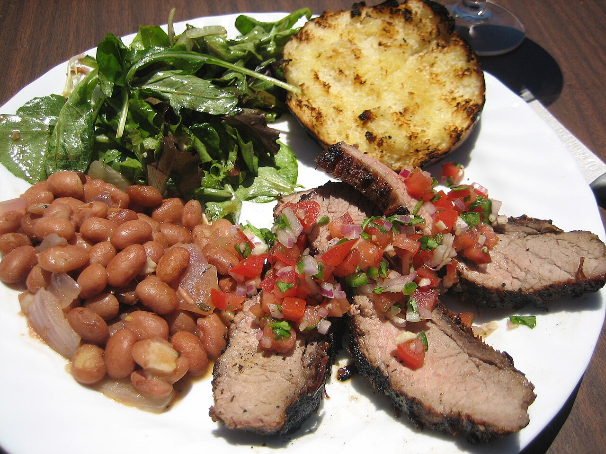

a storyTri-tip over red oak

One California valley cooks beef over local oak, grows pinot noir on the hills that oak comes off, and rarely puts the two together in the same sentence. This page follows both — the ranch barbecue that became a town's dish, the butcher's cut five different people claim, the wood that is the part nobody can ship, and what happens when a thin-skinned grape meets a salted, charred, medium-rare piece of bottom sirloin.
What arrives at the table
A triangle of beef, two to three pounds trimmed, rolled in salt, black pepper and garlic before it goes on. It cooks over oak coals on an iron grate that a hand crank raises and lowers, comes off at medium-rare, rests, and gets sliced thin across the grain. Beside it: pinquito beans, fresh salsa, a tossed green salad, and French bread split, dipped in melted butter and grilled on the same fire. Many local kitchens add Portuguese linguiça to the fire alongside the beef.
This is not the barbecue of a smoker and a long afternoon. The meat sits close to hot coals and cooks in under an hour. The fire does the seasoning that a sauce does elsewhere, and nothing gets mopped or glazed.
The valley cooked before it grew grapes
The Santa Maria Valley opens west to the Pacific, which is the fact that explains everything else about it — the barbecue, the wine and the weather all follow from a valley that runs the wrong way. The Chumash were here first; Tepusquet Creek carries a Chumash name that means fishing for trout.
In 1837 Governor Juan Bautista Alvarado granted Tomás Olivera two square leagues as Rancho Tepusquet — nearly 9,000 acres running up to the San Rafael Mountains. Olivera sold to his stepdaughter María Martina Osuna and her husband Juan Pacífico Ontiveros in 1855; Ontiveros started an adobe in 1857 and raised horses, cattle, sheep, grain — and wine grapes.
The barbecue grows straight out of that economy. Californio ranchers fed their vaqueros each spring from pits of oak coals dug in the ground, and served pinquitos alongside. Local barbecue historian R. H. Tesene put the turn into style like this: residents began stringing cuts of beef on skewers or rods and cooking them over the coals of a red oak fire. In 1931 the Santa Maria Club started a monthly stag barbecue that drew up to 700 people at a sitting. The cut then was top block sirloin, rolled in salt, pepper and garlic salt — the same seasoning, on a different muscle.
The fire, and the wood that stays home
Red oak here means coast live oak, Quercus agrifolia: a semi-evergreen tree of the California Floristic Province, growing from Mendocino down into northern Baja, and covering the hills around this valley. It does sit in the red oak section of the genus, so the local name is not the folk error people assume — though its acorns ripen in seven or eight months where most red oaks take eighteen. Californio Spanish called it encina; that is where Encinitas and Encinal come from.
What the wood does matters more than what it is called. It burns down to hot, dense coals and throws little smoke, which suits a hot, quick cook in a windy valley. The rig suits it too: a welded iron box, a grate on a hand crank, and a cook who controls temperature by winching meat up and down rather than by moving fire around.
And this is the part of the tradition that will not travel. A cut of beef ships anywhere. Salt, pepper and garlic are on every shelf. Beans can be posted. The tree cannot — so the further you get from the Central Coast, the more the same recipe becomes a marinade argument conducted over the wrong fuel.
The cut, and the five men who claim it
Tri-tip is the tensor fasciae latae, the triangular muscle at the bottom of the sirloin. Untrimmed it runs around five pounds. American meat buyers know it as IMPS/NAMP 185C, bottom sirloin butt, tri-tip. Butchers in central California leave the fat cap on for the grill; butchers elsewhere cut it off to make the piece look tidier on a tray.
The claims, in order of the dates attached to them:
1915. The cut appears in American trade usage as 'the triangle part' of the loin butt. So the muscle was noticed long before anyone marketed it.
Second World War. Rondo Brough, an Army butcher working in southern California, said he made 'triangle tip' a cut of its own to get an extra portion out of the animal and cut down on scrap. Colleagues carried the idea into California shops and restaurants after the war.
1950s, Oakland. Otto Schaefer Sr. named and marketed tri-tip there.
1950s, New York. Butcher and restaurateur Jack Ubaldi said he named and sold the same cut as 'Newport steak'.
1955, Long Beach. Jack's Corsican Room served triangle tip cooked in wine.
Late 1950s, Santa Maria. Larry Viegas, a butcher at the Santa Maria Safeway, told it this way: the store had a glut of hamburger, his manager Bob Schutz took a piece of the unwanted triangle that would normally have been ground, seasoned it with salt, pepper and garlic salt, and put it on a rotisserie for three quarters of an hour or so. It went over well, and Schutz began selling it as tri-tip.
1964, Palm Springs. Desert Provisions advertised the cut under the name tri-tip.
So: Santa Maria did not invent the muscle, and probably did not coin the name on its own. What the valley did was marry the cut to a fire, a seasoning and a plate that were already a century old, and then keep doing it in public every weekend until the combination had a name. The rest of the world calls the same piece aiguillette baronne in France, Bürgermeisterstück or Pastorenstück in northern Germany, Hüferschwanz in Austria, rabillo de cadera in Spain, colita de cuadril in Argentina and maminha in Brazil — every one of them a name that treats it as a roast, not a steak.
Who cooks it, and who says what it is
By the late 1950s four places were becoming the town's landmarks for this food: the Far Western Tavern, the Valley Steakhouse, the Hitching Post and Jocko's. Service-club pits still cook it at rodeos, school fundraisers and church benefits, which is where most people in the valley first eat it.
President Reagan liked it. Local pitmaster Bob Herdman and his Los Compadres crew cooked it for him repeatedly, including five times on the South Lawn of the White House.
The Santa Maria Valley Chamber of Commerce runs a Santa Maria Style Barbeque Association, which describes the tradition in the terms above — beef rolled in salt, pepper and garlic, cooked on skewers or rods over coals of red oak native to the valley — and points readers at certified locations. On 16 September 2026 its page invited places to get certified but did not publish the criteria. The trade also repeats that the Chamber registered the name and the menu in 1978; the Chamber's own post about that returned HTTP 403 to this project, so the claim is recorded here without a source this project has read.
The same hills grow pinot noir
Commercial vines came back to this valley in 1964 — a hundred acres, planted by growers who thought the ground could rival Napa. By the mid-1970s there were over 2,000 acres. In 1969 the Miller family bought Rancho Tepusquet, reunited two pieces of the old grant, and planted what is now Bien Nacido: over 800 acres, more than 250 of them pinot noir, sold row by row to winemakers rather than by the ton.
On 5 August 1981 the Santa Maria Valley became an American Viticultural Area — the country's third, California's second, and the first for Santa Barbara or San Luis Obispo county. The TTB pushed the southern boundary out to the watershed line in 2010, adding 18,790 acres and nine vineyards, and taking the AVA to 116,273 acres.
The climate reads like an error. This is 34.9°N — the latitude of Los Angeles, of Beirut, of Casablanca — and the growing season is colder than most of the Willamette Valley. Morning fog takes hours to clear, afternoon wind replaces it, and summer averages 75°F: Winkler Region I, the coolest class the scale has. Rain runs under 14 inches in a normal year, so the vines drink from a pipe. Pinot noir and chardonnay are the appellation's flagship varieties.
Which means the barbecue and the wine come off the same slopes. Oak on the hillsides, vines on the bench below, beans on the valley floor, and a town in the middle that cooks all three.
So what do you drink with it?
Start with what the food does, because the food is the harder half.
The meat is lean, with a fat cap on one side and a salty, charred crust on all of them. It is served medium-rare, so there is blood and iron in it. The salsa is sharp — raw tomato, chilli, onion, celery, vinegar — and it goes on top, not on the side. The beans are earthy and often carry pork. The bread is buttered and grilled. Nothing on the plate is sweet, and nothing is sauced in the barbecue-sauce sense.
Now what pinot noir brings: acid, modest tannin, red fruit, and — in wine from this valley in particular — a savoury, faintly bloody note that sits close to what rare beef already tastes like. Inference — the acid is the hinge. A sharp salsa flattens a soft, low-acid red and leaves it tasting of nothing; a wine with acid of its own meets it instead. Iron in rare meat and iron-edged savour in the wine are a match by similarity, which is the same reason duck works.
What cuts the other way, and it is a real objection: char and oak smoke are bullies. A delicate bottle can simply lose. Tri-tip is also lean enough to leave tannin unbuffered — there is little fat to soften it — which is an argument against a big tannic red as much as for a small one. Inference — the risk with pinot is not tannin, it is scale: a light village wine gets buried, while the denser Santa Maria bottles, with their stem spice and their savour, stand up.
What the valley itself pours is a separate question from what theory says, and the sources this project has read do not answer it. The tradition's own literature describes the plate in detail and says nothing about wine. Local steakhouses stock the county's syrah and cabernet as well as its pinot. This page will not hand down a verdict it cannot source. What it can say is that the two things came off one piece of ground, and that the ground's cold fog explains both of them.
If you are cooking it
Buy it with the fat cap on, or ask for it. Season heavily: the tradition is salt, black pepper and garlic — garlic salt in the old accounts — rolled over the whole piece.
Build a bed of coals and cook directly over them, fat side up to start. Pull at an internal 130–135°F for medium-rare and let it rest; carry-over will take it further. The grain inside a tri-tip changes direction about two thirds of the way along, so find the turn and change your knife angle with it — slicing the whole piece one way guarantees that half of it chews like rope.
If you have no red oak, use what burns clean and hot near you, and say so rather than pretending. The wood is regional, and that is the point of it.
What this page could not settle
Who named the cut. Five claims, four decades, and no document this project has seen that settles it. The Santa Maria account is well attested as an account — Viegas telling it about Schutz — which is not the same as proof of first use.
The 1978 registration. Widely repeated in the trade, including the specific claim that the Chamber protected the whole menu rather than the meat. The Chamber's own explanation was unreachable from this machine on 16 September 2026 (HTTP 403), and no registration number has been checked here.
What certification requires. The association invites restaurants to get certified and lists certified locations; the criteria were not on the page this project read.
What the valley drinks with it. Nothing in the sources read here records a local convention. Anybody who has stood at a Santa Maria pit and watched what people poured knows more than this page does.
Facts
| kind | essay |
|---|---|
| country | United States |
| region | Santa Maria Valley, Santa Barbara County, California |
| where | 34.9500, -120.3000 (region) · OpenStreetMap · open in maps Cited |
| confidence | high · updated 2026-09-16 |
Numbers somebody published
| Latitude of the valley | 34.9 °N — Pinot Country — this project's own reasoning from this project's own coordinates for the AVA |
|---|---|
| Average summer temperature | 75 °F — Santa Maria Valley AVA |
| AVA established · 1981 | 1981-08-05 — 27 CFR part 9 — American Viticultural Areas 46 FR 39812, Aug. 5, 1981 |
| Tri-tip specification | 185C — Institutional Meat Purchase Specifications, Series 100 — Fresh Beef |
| Santa Maria Club stag barbecue, diners a sitting · 1931 | 700 people — Santa Maria–style barbecue |
Nothing in this table is estimated here. Where a figure is missing it is missing, and the row is not written.
Its kin
Who points back
Sources
- Santa Maria–style barbecue · link
- Tri-tip · link
- Santa Maria Valley AVA · link
- Bien Nacido Vineyards · link
- Quercus agrifolia · link
- Santa Maria Style Barbeque Association · link
- Santa Maria, California · link
- Rancho Tepusquet · link
- Cut of beef · link
- Institutional Meat Purchase Specifications, Series 100 — Fresh Beef · link
- 27 CFR part 9 — American Viticultural Areas · link
- Santa Maria Valley — barbecue and the valley's restaurants · link
- This Unsung California Town Has the West's Best BBQ — Margo True, 2013
- Salsa (food) · link
Where it came from: Cited a source we name · Harvested pulled from an open dataset · Tradition what the tradition says, hedged · Inference this project's reasoning · Field somebody stood there. This record as JSON.